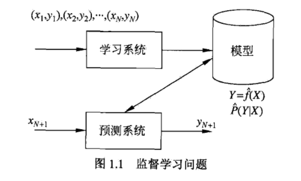
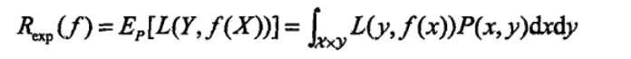
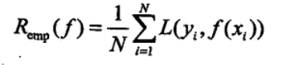
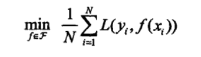
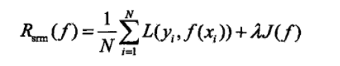
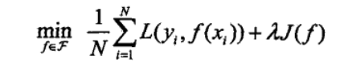
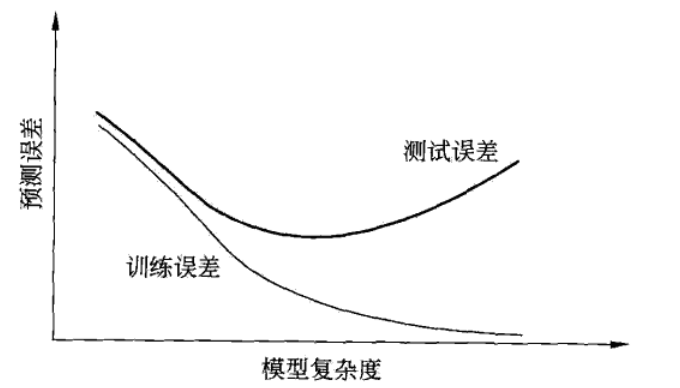
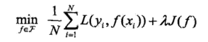
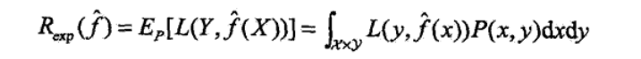

一、监督学习
任务：学习一个模型，使模型能够对任意给定的输入，对其相应的输出给出一个好的预测。
监督学习分为学习和预测两个过程，由学习系统与预测系统完成

1.基本概念
（1）输入空间，特征空间与输出空间
将输入与输出所有可能取值的集合分别称为输入空间或输出空间
特征空间：每个具体的输出是一个实例，通常由特征向量表示，所有特征向量存在的空间称为特征空间
特征空间的每一维对应于一个特征．有时假设输入空间与特征空间为相同的空间，对它们不予区分;有时假设输入空间与特征空间为不同的空间，将实例从输入空间映射到特征空间．模型实际上都是定义在特征空间上的.
（2）联合概率分布
监督学习假设输入与输出的随机变量X和Y遵循联合概率分布P(X,Y).P(X,)表示分布函数，或分布密度函数．注意，在学习过程中，假定这一联合概率分布存在，但对学习系统来说，联合概率分布的具体定义是未知的．训练数据与测试数据被看作是依联合概率分布P(X,Y)独立同分布产生的．统计学习假设数据存在一定的统计规律，X和Y具有联合概率分布的假设就是监督学习关于数据的基本假设.
（3）假设空间
模型属于由输入空间到输出空间的映射的集合，这个集合就是假设空间。
监督学习的模型可以是概率模型或非概率模型，由条件概率分布P(Y |X)或决策函数(decision function)Y=f(X)表示，随具体学习方法而定．对具体的输入进行相应的输出预测时，写作P(y|x)或y= f(x) .
二、统计学习三要素
方法=模型+策略+算法
1.模型
（监督学习中）模型及时所要学习的条件概率分布或决策函数。模型的假设空间包含所有可能得条件概率分布或决策函数
2.策略
目的：从假设空间中选取最优模型
（1）损失函数和风险函数
- 损失函数度量模型一次预测的好坏
- 风险函数度量平均意义下模型预测的好坏
损失函数是预测值f(x)和Y的非负实值函数
包括：
- 0-1损失函数
- 平方损失函数
- 绝对损失函数
- 对数损失函数
损失函数值越小，模型就越好。由于模型的输入、输出（X,Y）是随机变量。遵循联合分布P(X,Y)。损失函数的期望是

这是理论上模型f(X)关于联合分布P(X,Y)的平均意义下的损失,称为风险函数或期望损失
模型f(X)关于训练数据集的平均损失称为经验风险或经验损失

期望风险是模型关于联合分布的期望损失，经验风险是模型关于训练样本集的平均损失．根据大数定律，当样本容量N趋于无穷时，经验风险趋于期望风险。所以一个很自然的想法是用经验风险估计期望风险．
但是，由于现实中训练样本数目有限，甚至很小，所以用经验风险估计期望风险常常并不理想，要对经验风险进行一定的矫正．这就关系到监督学习的两个基本策略:经验风险最小化和结构风险最小化.
（2）经验风险最小化和结构风险最小化.
在假设空间、损失函数以及训练数据集确定的情况下,经验风险函数就可以确定．经验风险最小化的策略认为，经验风险最小的模型是最优的模型．根据这一策略，按照经验风险最小化求最优模型就是求解最优化问题:

当样本容量足够大时，经验风险最小化能保证有很好的学习效果
样本容量足够很小时，会产生“过拟合”现象
结构风险最小化是为了防止过拟合而提出来的策略．结构风险最小化等价于正则化、结构风险在经验风险上加上表示模型复杂度的正则化项或罚项．在假设空间、损失函数以及训练数据集确定的情况下，结构风险的定义是

其中J(f)为模型的复杂度，是定义在假设空间上的泛函．模型越复杂，复杂度J(f)就越大;反之，模型f越简单，复杂度J(f)就越小．也就是说，复杂度表示了对复杂模型的惩罚.入≥0是系数，用以权衡经验风险和模型复杂度.结构风险小需要经验风险与模型复杂度同时小．结构风险小的模型往往对训练数据以及未知的测试数据都有较好的预测.
结构风险最小化的策略认为结构风险最小的模型是最优模型，多以最优模型就是求解最优化问题

3.算法
学习模型的具体计算方法
三、模型评估与选择
1.训练误差与测试误差
- 训练误差是模型关于训练数据集的平均损失
- 测试误差是模型关于测试数据集的平均损失
2.过拟合与模型选择
过拟合是指学习时选择的模型所包含的参数过多，以至于出现这一模型对已知数据预测得很好，但对未知数据预测很差的现象
模型选择的目的是避免过拟合并提高模型的预测能力

描述了训练误差和测试误差与模型的复杂度之间的关系．当模型的复杂度增大时，训练误差会逐渐减小并趋向于0;而测试误差会先减小，达到最小值后又增大．当选择的模型复杂度过大时，过拟合现象就会发生．这样，在学习时就要防止过拟合，进行最优的模型选择，即选择复杂度适当的模型，以达到使测试误差最小的学习目的.下面介绍两种常用的模型选择方法:正则化与交叉验证.
四、正则化与交叉验证
1.正则化
正则化是结构风险最小化策略的实现，是在经验风险上加-一-个正则化项或罚项.
正则化项一般是模型复杂度的单调递增函数，模型越复杂，正则化值就越大.比如,正则化项可以是模型参数向量的范数.
一般形式：

第一项是经验风险，第二项是正则化项，λ≥0为调整两者之间关系的系数
正则化的作用是选择经验风险与模型复杂度同时较小的模型
正则化符合奥卡姆剃刀原理．奥卡姆剃刀原理应用于模型选择时变为以下想法:在所有可能选择的模型中，能够很好地解释已知数据并且十分简单才是最好的模型，也就是应该选择的模型．从贝叶斯估计的角度来看，正则化项对应于模型的先验概率．可以假设复杂的模型有较大的先验概率，简单的模型有较小的先验概率.
2.交叉验证
交叉验证的基本想法是重复地使用数据;把给定的数据进行切分，将切分的数据集组合为训练集与测试集，在此基础上反复地进行训练、测试以及模型选择.
- 简单交叉验证：首先随机地将已给数据分为两部分，一部分作为训练集，另一部分作为测试集;然后用训练集在各种条件下训练模型，从而得到不同的模型;在测试集上评价各个模型的测试误差，选出测试误差最小的模型.
- S折交叉验证：首先随机地将已给数据切分为S个互不相交的大小相同的子集;然后利用S-1个子集的数据训练模型，利用余下的子集测试模型;将这一过程对可能的S种选择重复进行;最后选出S次评测中平均测试误差最小的模型.
- 留一交叉验证：S折交叉验证的特殊情形是S=N，称为留一交叉验证，往往在数据缺乏的情况下使用．这里，N是给定数据集的容量.
五、泛化能力
学习方法的泛化能力是指由该方法学习到的模型对未知数据的预测能力，是学习方法本质上重要的性质．
1.泛化误差

泛化误差反映了学习方法的泛化能力，如果一种方法学习的模型比另一种方法学习的模型具有更小的泛化误差，那么这种方法就更有效．事实上，泛化误差就是所学习到的模型的期望风险.
2.泛化误差上界
性质：是样本容量的函数，当样本容量增加时，泛化上界趋于0;它是假设空间容量的函数，假设空间容量越大，模型就越难学，泛化误差上界就越大.